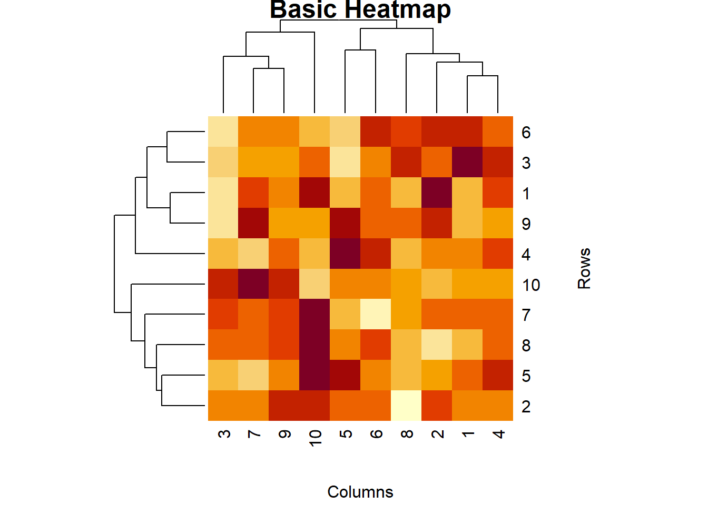
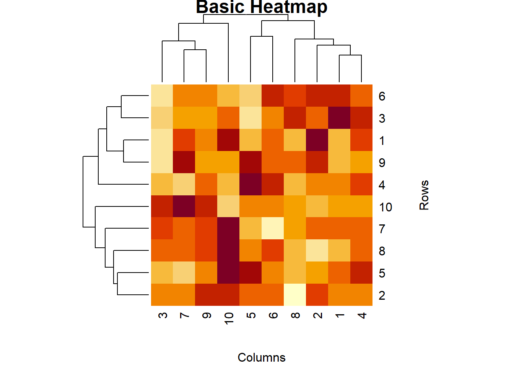
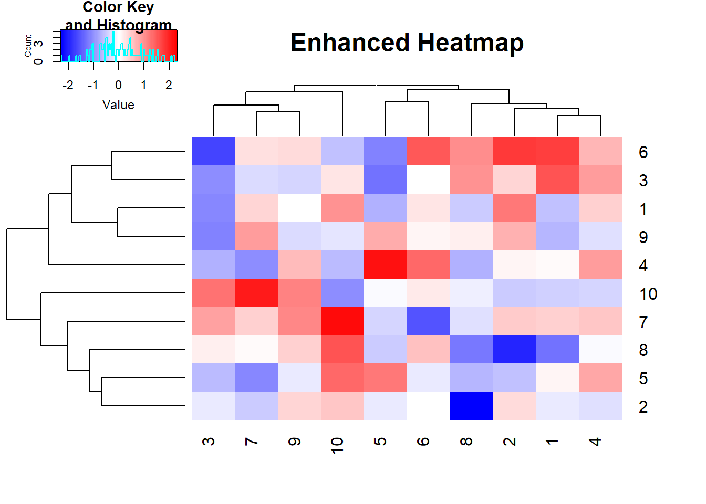
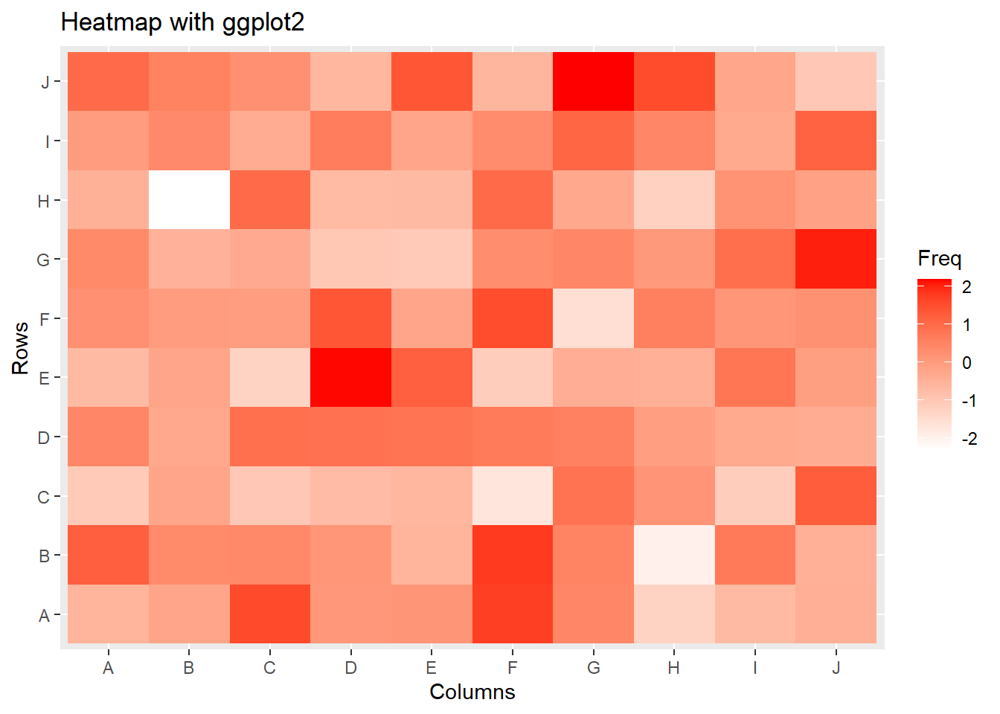
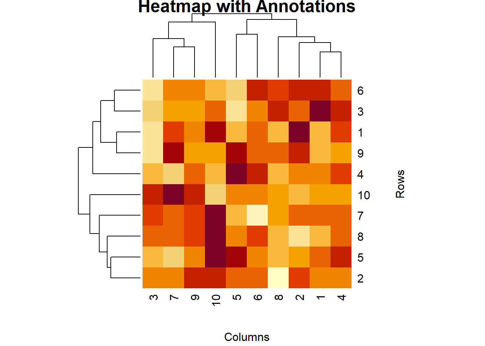
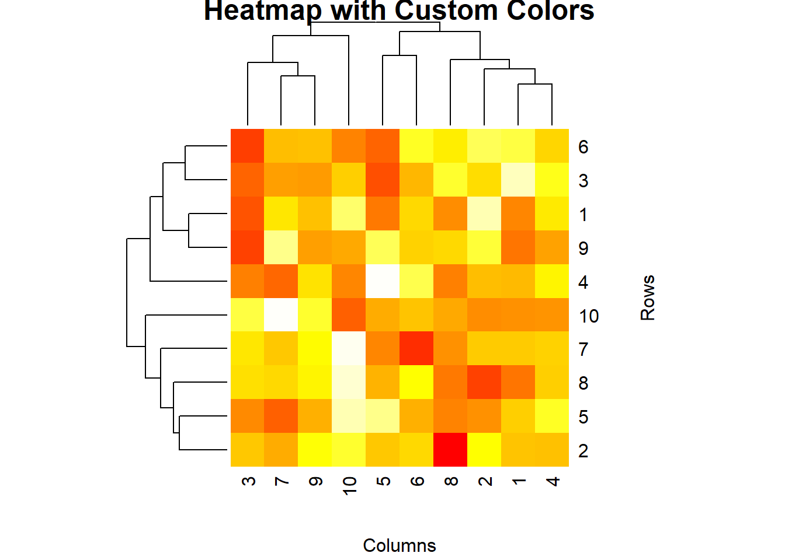

# Creating sample data
set.seed(123)
data <- matrix(rnorm(100), nrow = 10)
# Creating a basic heatmap
heatmap(data, main = "Basic Heatmap", xlab = "Columns", ylab = "Rows")
Heatmaps are a powerful visualization tool used to represent data in a matrix format, where individual values are represented as colors. They are particularly useful for visualizing the intensity of data at specific points and identifying patterns or correlations in large datasets. In this lecture, we will learn how to create and customize heatmaps in R.
A heatmap is a graphical representation of data where individual values are represented by colors. It is used to visualize the density or intensity of data points in a matrix format.
Visualizing correlation matrices.
Displaying the intensity of data points.
Identifying patterns and clusters in large datasets.
R provides several functions for creating heatmaps, including heatmap(), heatmap.2() from the gplots package, and the geom_tile() function from ggplot2.
The heatmap() function in base R creates a basic heatmap.
# Creating sample data
set.seed(123)
data <- matrix(rnorm(100), nrow = 10)
# Creating a basic heatmap
heatmap(data, main = "Basic Heatmap", xlab = "Columns", ylab = "Rows")
The heatmap.2() function from the gplots package provides more customization options.
# Installing and loading gplots
install.packages("gplots")
::: {.cell}
```{.r .cell-code}
library(gplots)Warning: package 'gplots' was built under R version 4.3.3
Attaching package: 'gplots'The following object is masked from 'package:stats':
lowess# Creating an enhanced heatmap with heatmap.2()
heatmap.2(data, main = "Enhanced Heatmap", trace = "none", col = bluered(100), margins = c(5, 5))
:::
# Plot result
heatmap.2(data, main = "Enhanced Heatmap", trace = "none", col = bluered(100), margins = c(5, 5))
The geom_tile() function from ggplot2 can be used to create heatmaps.
# Installing and loading ggplot2
install.packages("ggplot2")library(ggplot2)Warning: package 'ggplot2' was built under R version 4.3.3# Converting matrix to data frame
data_df <- as.data.frame(as.table(data))
# Creating a heatmap with ggplot2
ggplot(data_df, aes(Var1, Var2, fill = Freq)) +
geom_tile() +
scale_fill_gradient(low = "white", high = "red") +
labs(title = "Heatmap with ggplot2", x = "Columns", y = "Rows")
You can add annotations to a heatmap to provide more context.
# Adding row and column names
rownames(data) <- paste("Row", 1:10, sep = "")
colnames(data) <- paste("Col", 1:10, sep = "")
# Creating a heatmap with annotations
heatmap(data, main = "Heatmap with Annotations", xlab = "Columns", ylab = "Rows")# Plot result
heatmap(data, main = "Heatmap with Annotations", xlab = "Columns", ylab = "Rows")
You can customize the color palette of a heatmap to improve its visual appeal.
# Creating a heatmap with a custom color palette
heatmap(data, main = "Heatmap with Custom Colors", col = heat.colors(100), xlab = "Columns", ylab = "Rows")# Plot result
heatmap(data, main = "Heatmap with Custom Colors", col = heat.colors(100), xlab = "Columns", ylab = "Rows")
Here’s a comprehensive example of creating and customizing heatmaps in R.
# Creating sample data
data <- matrix(rnorm(100), nrow = 10)
rownames(data) <- paste("Row", 1:10, sep = "")
colnames(data) <- paste("Col", 1:10, sep = "")
# Basic heatmap
heatmap(data, main = "Basic Heatmap", xlab = "Columns", ylab = "Rows")
# Enhanced heatmap with heatmap.2()
install.packages("gplots")
library(gplots)
heatmap.2(data, main = "Enhanced Heatmap", trace = "none", col = bluered(100), margins = c(5, 5))
# Heatmap with ggplot2
install.packages("ggplot2")
library(ggplot2)
data_df <- as.data.frame(as.table(data))
ggplot(data_df, aes(Var1, Var2, fill = Freq)) +
geom_tile() +
scale_fill_gradient(low = "white", high = "red") +
labs(title = "Heatmap with ggplot2", x = "Columns", y = "Rows")
# Heatmap with annotations
heatmap(data, main = "Heatmap with Annotations", xlab = "Columns", ylab = "Rows")
# Heatmap with custom colors
heatmap(data, main = "Heatmap with Custom Colors", col = heat.colors(100), xlab = "Columns", ylab = "Rows")# Plot results
heatmap(data, main = "Basic Heatmap", xlab = "Columns", ylab = "Rows")heatmap.2(data, main = "Enhanced Heatmap", trace = "none", col = bluered(100), margins = c(5, 5))ggplot(data_df, aes(Var1, Var2, fill = Freq)) +
geom_tile() +
scale_fill_gradient(low = "white", high = "red") +
labs(title = "Heatmap with ggplot2", x = "Columns", y = "Rows")heatmap(data, main = "Heatmap with Annotations", xlab = "Columns", ylab = "Rows")heatmap(data, main = "Heatmap with Custom Colors", col = heat.colors(100), xlab = "Columns", ylab = "Rows")In this lecture, we covered how to create and customize heatmaps in R. We explored various techniques for creating heatmaps using base R, the gplots package, and ggplot2. We also learned how to add annotations and customize colors to enhance the visual appeal of heatmaps.
For more detailed information, consider exploring the following resources:
If you found this lecture helpful, make sure to check out the other lectures in the R Graphs series. Happy plotting!